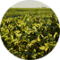
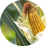
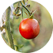
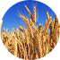
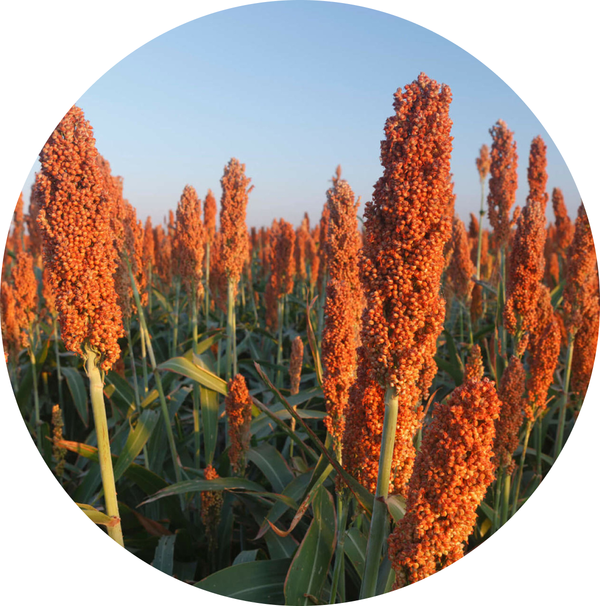
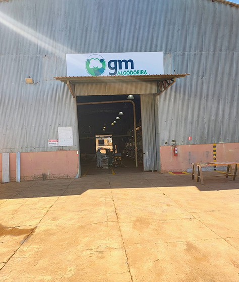
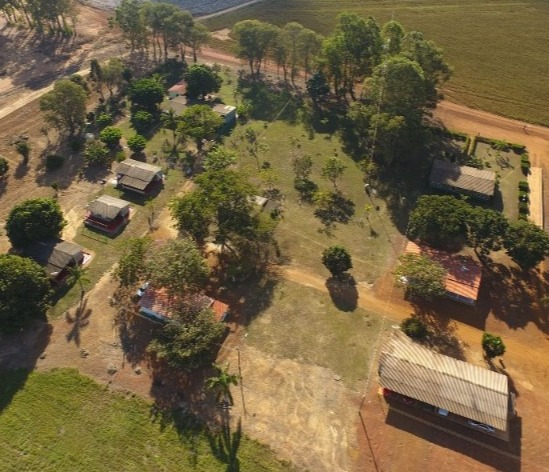
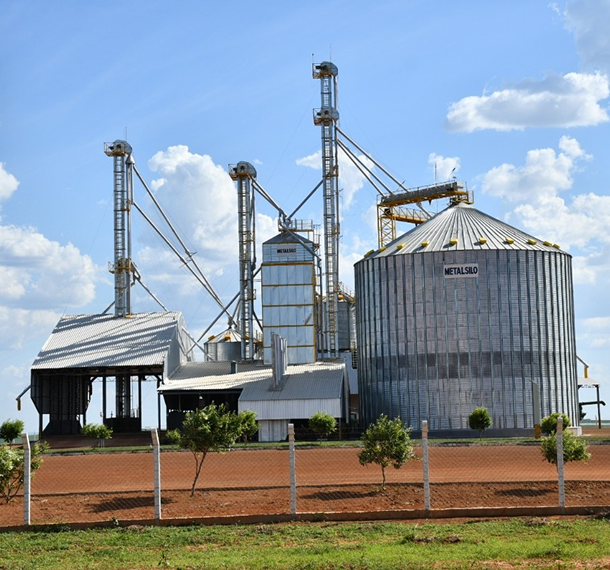

Missão
Trabalhar na agricultura de forma sustentável e tecnológica, produzindo alimentos e fibras, buscando atender os objetivos sociais.
Há mais de 20 anos produzindo com qualidade, sustentabilidade e tecnologia, gerando valor e desenvolvimento para o Brasil.


Fundada por Carlos Moresco e Genes Ceppo, a empresa iniciou suas atividades em 2003 com arrendamentos agrícolas em Goiás. Hoje, atua com excelência no setor agropecuário.
Após 15 anos gerenciando o Grupo SLC, Carlos Alberto Moresco e Genes Ceppo decidiram por ingressar em uma parceria com a Supporte Engenharia, empresa esta responsável pela construção de três prédios em Luziânia-GO. Após verificarem possíveis áreas disponíveis para arrendamento na região de Cristalina / Luziânia - GO, escolheram a Fazenda Onça de propriedade do Sr. Idevino Alessio e a Fazenda Macaé de propriedade dos Srs. Wilson, Eduardo e Gerson Gonçalves.
O produtor José Paulo Boni (em memoria), contatou o Sr. Genes para repassar uma área arrendada em seu nome de 1.100 hectares referente às Fazendas Ema e Lavrinha, com a prerrogativa de também adquirir uma algodoeira de propriedade do Sr. Paulo, que prontamente aceitou.
No mês de outubro, ano do término do contrato da parceria com o Grupo Macaé, decidiram de comum acordo para não renovação do mesmo. Os Sócios Carlos Alberto Moresco e Genes Ceppo, mantiveram a sociedade e formaram a GM Agrícola e GM Algodoeira, explorando áreas arrendadas Fazenda Onça, Ema e Lavrinha.
O arrendamento da Fazenda Samambaia marcou a expansão do Grupo GMS, adicionando 2.939,50 hectares de produção, sendo 724 hectares irrigados, fortalecendo a capacidade produtiva e a presença no agronegócio.
Trabalhar na agricultura de forma sustentável e tecnológica, produzindo alimentos e fibras, buscando atender os objetivos sociais.
Crescer de forma responsável no uso correto dos recursos, elevando a qualidade dos produtos com transparência, gestão e ética, sendo reconhecido mundialmente.
Simplicidade, humildade, ética e respeito com os princípios pessoais, responsabilidade social e ambiental, honestidade, transparência, confiança e integridade com excelência e inovação.

A cultura da soja é uma das principais da agricultura brasileira. É uma planta leguminosa usada na alimentação humana e animal, além da produção de óleo e biocombustível. Cresce melhor em clima quente e solo fértil, com bom manejo e controle de pragas.

O milho é um dos principais cereais cultivados no Brasil, sendo utilizado na alimentação humana e animal, além da produção de etanol. A planta se desenvolve melhor em solos férteis e bem drenados, com clima quente e úmido.
O cultivo de algodão é uma das principais atividades do agronegócio brasileiro. A planta se adapta a diferentes tipos de solo, mas prefere os mais férteis e bem drenados. O algodão é utilizado na indústria têxtil e na produção de óleo.

O cultivo de tomate é uma das principais atividades do agronegócio brasileiro. A planta se adapta a diferentes tipos de solo, mas prefere os mais férteis e bem drenados. O tomate é utilizado na indústria alimentícia e na produção de molho.

O cultivo de trigo é uma das principais atividades do agronegócio brasileiro. A planta se adapta a diferentes tipos de solo, mas prefere os mais férteis e bem drenados. O trigo é utilizado na indústria alimentícia e na produção de farinha.

O sorgo é uma planta resistente à seca e ao calor, cultivada para grãos, forragem e silagem. De ciclo curto, adapta-se a diversos solos e é usado tanto na alimentação animal quanto na produção de alimentos e biocombustíveis.

A GM Algodoeira é responsável pelo beneficiamento do algodão após a colheita, realizando a separação da fibra e das sementes. Durante esse processo, impurezas como poeira e folhas são removidas. Em seguida, a fibra é classificada e compactada em fardos para comercialização. O caroço do algodão também é aproveitado, sendo destinado à produção de ração animal e óleo. A usina desempenha um papel fundamental na agregação de valor ao algodão e na geração de subprodutos.
Fazenda Samambaia — Aliada do Grupo GMS na missão de produzir com qualidade e sustentabilidade.


O escritório do Grupo GMS é o centro administrativo e estratégico das nossas operações. É aqui que são conduzidos os planejamentos, decisões e controles que garantem o bom funcionamento das atividades no campo. Com uma equipe comprometida e estrutura moderna, o ambiente favorece a organização, a eficiência e o desenvolvimento constante do nosso negócio.
O silo é responsável pelo armazenamento adequado dos grãos colhidos, como soja, milho e algodão, garantindo sua conservação até o momento da comercialização ou beneficiamento. Esse processo é essencial para manter a qualidade dos grãos, evitando perdas por umidade, pragas ou deterioração. Os silos contam com sistemas de aeração e monitoramento que controlam a temperatura e a umidade interna, assegurando um ambiente ideal de estocagem. Além disso, permitem maior planejamento logístico e flexibilidade nas operações agrícolas, sendo um elo estratégico entre o campo e o mercado.

Rodovia GO 010 Km 211 — Luziânia/GO
contato@grupogms.com.br e/ou rh@grupogms.com.br
Seg ‑ Sex: 08h às 18h